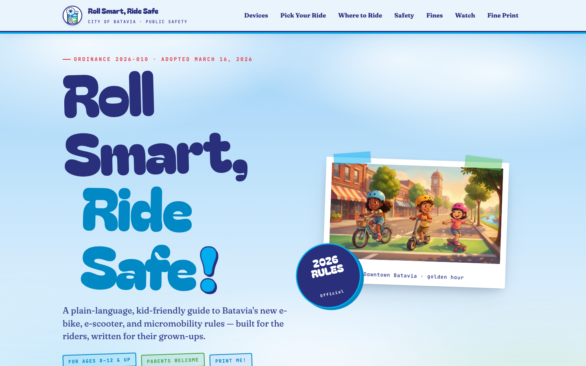
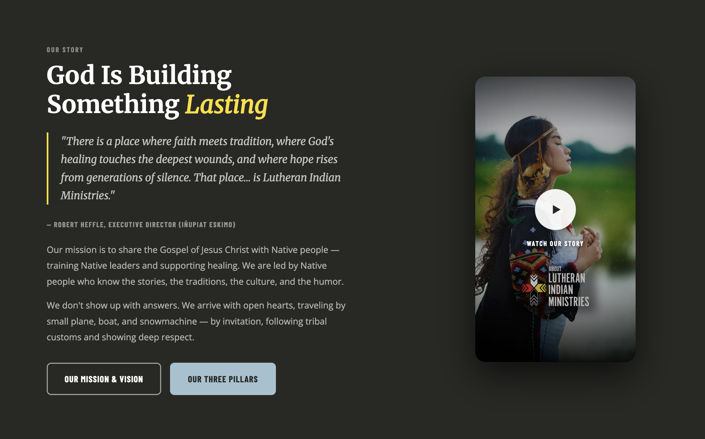
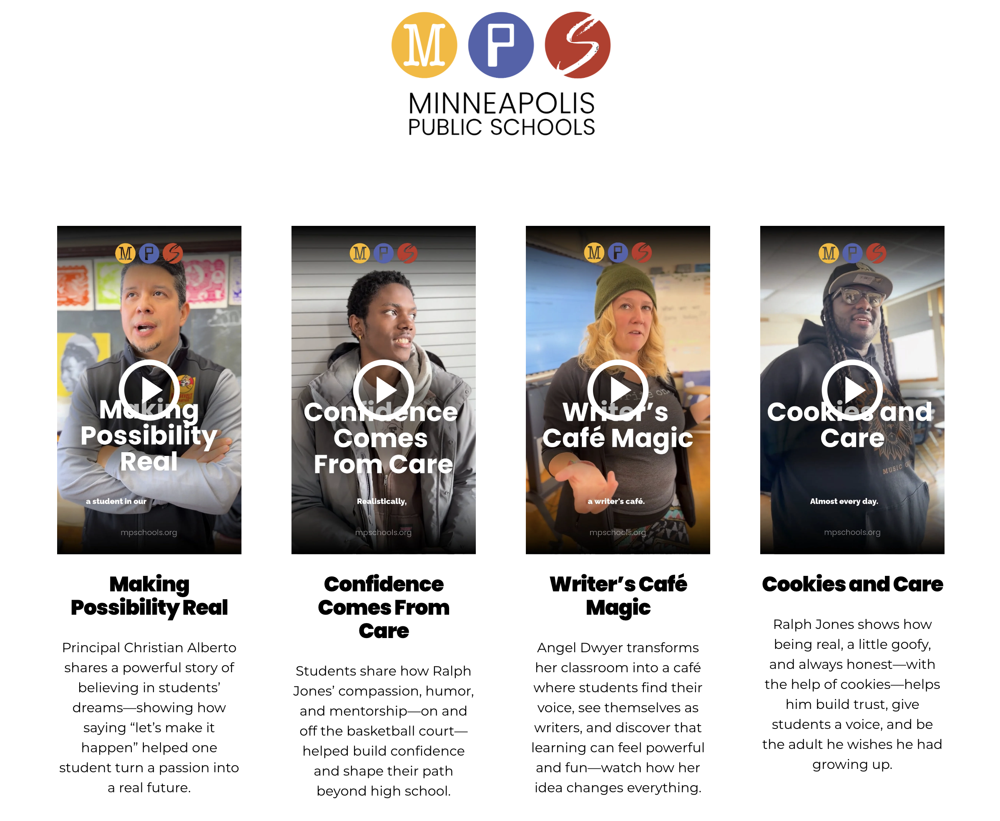
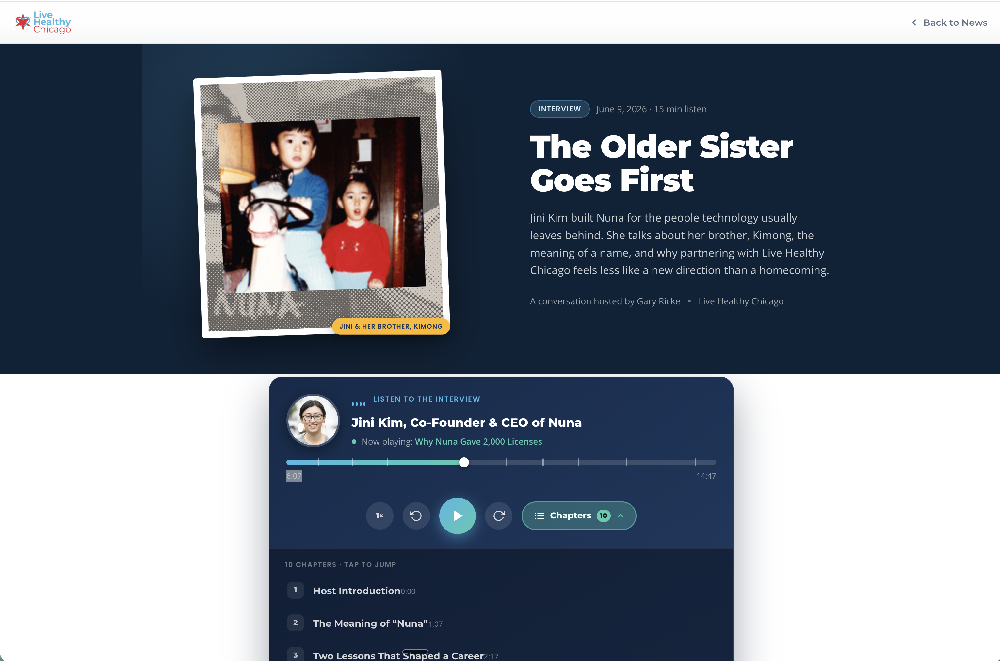
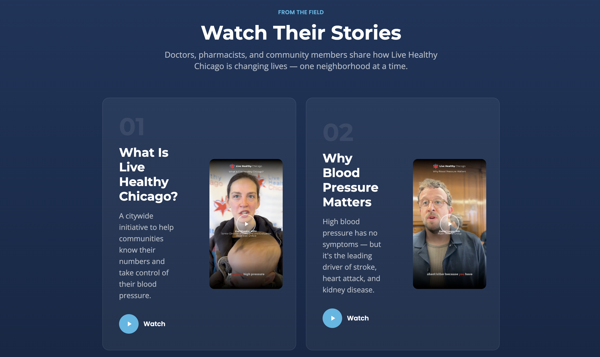
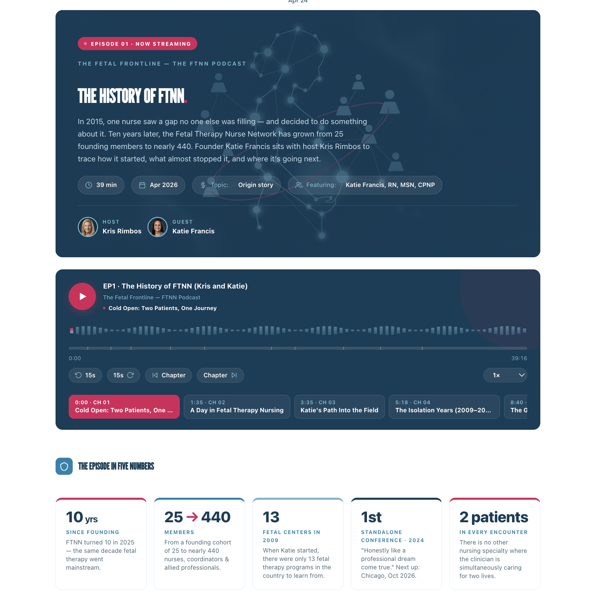
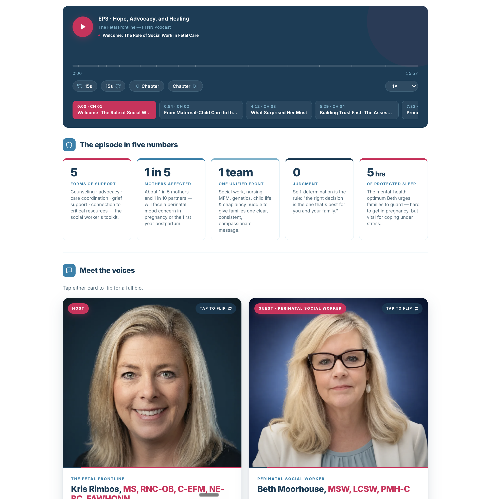
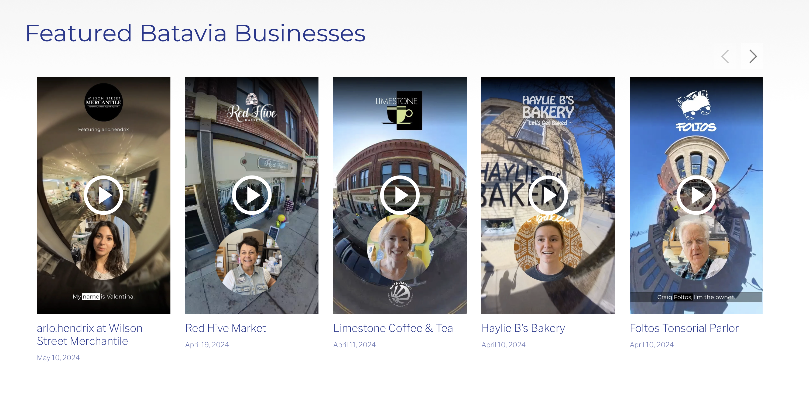

Protected preview
Enter the password to view this walkthrough.
Enter the password to view this walkthrough.
Concept Demo & Walkthrough
Meeting Walkthrough
A running index of the live projects we walked through together — what we built, how we built it, and the thinking behind each one.
The Concept We're Testing
We're proving out a repeatable, low-cost content model built for mission-driven organizations: show up to a real event, capture genuine short-form video from the people who are actually there, produce it fast, and assemble it all into a single, focused landing page that tells the story and drives action — without an agency-sized invoice.
Real voices at a live event — riders, residents, partners — recorded simply and honestly. No scripts, no stock footage, no staged actors.
Light, fast editing into punchy short clips — captioned, on-brand, and ready for both the page and social. Quality that respects the viewer, at a fraction of the cost.
The clips become the heart of a single, purpose-built page — explaining the issue, showcasing the voices, and giving visitors one clear next step.
Built for limited budgets. The whole point is to deliver agency-quality storytelling at a scale a nonprofit with constrained funds can actually sustain — proving the model works before scaling it up. The Batavia site below is our first live proof of concept.
01 — Public Safety / Civic Explainer

Live homepage — captured for this index.
We turned the City of Batavia's new e-mobility ordinance (Ordinance 2026-010) into “Roll Smart, Ride Safe!” — a plain-language, kid-friendly microsite that answers the only questions a rider actually has: What am I riding? Where can I ride it? And what happens if I break the rules?
A single-page civic explainer aimed at riders 8+ but written so parents get every detail too. Sections:
Most ordinances live as a PDF no resident ever opens. By leading with the rider's question instead of the statute number, the law becomes something an 8-year-old can act on — and a parent can trust.
The core of the project: translating legal code into plain language without losing a single requirement.
E-scooter? You've got to be 18+, and it tops out at 10 mph. Break the rules and the fines climb fast 👇
“Shall not exceed ten miles per hour” becomes “tops out at 10 mph.” Same rule, zero legalese.
Devices are sorted by what they are — not by statute order — so riders self-identify in seconds.
Kid narrators and illustrations carry the message — making compliance feel like common sense, not a citation.
02 — Nonprofit Brand-Story Film

The “Our Story” section I demoed — the About film anchors the whole page.
The centerpiece of LIM's new site is a five-minute “About” film narrated by executive director Robert Heffle (Iñupiat Eskimo, with roots in Kotzebue, 35 miles above the Arctic Circle). It's the emotional front door to the entire organization — and the clearest example of the capture → produce → publish model at work.
Go watch the film
Open the preview, then enter the password to watch the full five-minute film.
limhope
A purpose-built “Our Story” section that wraps the About film in a pull-quote, a plain-language mission, and two clear next steps — Mission & Vision and Our Three Pillars. The video does the emotional work; the page turns feeling into action.
Three production moves did the heavy lifting: a series of still images animated into short video clips, those clips strung into one continuous film, and a single voiceover I recorded then cloned into the executive director's voice. Full breakdown below.
The finished film is indistinguishable from a traditional shoot — Robert's voice, authentic imagery, a custom score — yet it was produced entirely from still images and a single recording, with no crew, travel, or location days.
No camera crew, no location shoots, no travel above the Arctic Circle — the entire film was assembled from still images and a single voice recording.
Sourcing authentic Native American and Indigenous-feeling background music is genuinely hard. Licensable libraries are thin, culturally appropriate tracks are scarce, and the wrong choice risks being tone-deaf on a sensitive subject. It's one of the real bottlenecks in producing video like this.
AI music turned out to be exceptional at exactly this job: generating subtle, respectful, on-theme scoring that sits underneath the narration without ever competing with it. For our video production it's a superpower — we can score a film in the precise emotional tone the story demands, instantly and affordably, instead of settling for generic stock.
For a nonprofit on a tight budget, that's the difference between a film that feels custom-made and one that feels off-the-shelf — at none of the licensing cost or sourcing struggle.
03 — Education / Authentic Testimonial Series

The video wall I demoed — a grid of short, vertical, real-voice stories from inside MPS.
For Minneapolis Public Schools we built a library of short, vertical testimonial films — real principals, teachers, residents, and students telling their own stories straight to camera. No scripts, no actors: just the people who actually make the district what it is, captured where they work.
Go watch the films
Open the preview, then enter the password to watch the testimonial clips.
mps
A growing wall of vertical, captioned short films — each one person, one true story, branded for MPS and built to live on both the website and social. Featured cuts include Making Possibility Real, Confidence Comes From Care, Writer's Café Magic, and Cookies and Care.
One person, one iPhone, eight schools. Roughly ten minutes of unscripted conversation per teacher — and because each interview held three or four stories, that lean setup produced 30+ finished videos. Full method below.
Families don't trust brochures — they trust people. Hearing a principal say “let's make it happen” or a teacher explain why a bike tire sits in her classroom does more for enrollment than any glossy ad could.
8 schools · 1 iPhone · ~10 minutes each · 30+ videos. The entire series was shot by one person on a phone — proof that authentic story at real volume doesn't require a crew, a studio, or an agency budget.
A candid, on-location method built for volume — get real people talking, then mine each conversation for every story it holds.
Principal Christian shares how believing in a student's dream — and saying “let's make it happen” — turned a passion into a real future.
Students share how Ralph Jones' compassion, humor, and mentorship — on and off the basketball court — shaped their path beyond high school.
Angel Dwyer turns her classroom into a café where students find their voice and discover that learning can feel powerful and fun.
Ralph Jones shows how being real, a little goofy, and always honest — with the help of cookies — builds trust and gives students a voice.
04 — Audio Story / AI-Produced Interview

“The Older Sister Goes First” — a single conversation turned into a chaptered, listenable story page.
“The Older Sister Goes First” is a 15-minute listenable interview with Jini Kim, Co-Founder & CEO of Nuna — and it's the most efficient model we've built yet. The whole page began as a single 20-minute Zoom call, then was produced into a polished, chaptered audio story with all of its written content generated around it.
Go listen to the interview
Open the preview, then enter the password to listen and jump between chapters.
livehealthychi
A full editorial interview page — headline, summary, host credit, hero imagery, and a custom audio player with 10 tappable chapters (“The Meaning of ‘Nuna,'” “Why Nuna Gave 2,000 Licenses,” and more) that let listeners jump straight to the moment they want.
One 20-minute Zoom call → cleaned up with Studio Sound → handed to Claude Code, which generated the chapters, the written page, and all the surrounding content. Fast, lean, and turned around quickly. Full pipeline below.
It turns a simple conversation into genuinely engaging, navigable content — something well beyond a plain audio file. The same effort that yields one raw recording yields a finished, branded, chaptered story.
A lean, AI-assisted pipeline that extracts engaging, structured content from a single ordinary conversation.
From the Same Event

“Watch Their Stories” — videos built around shared themes, not one clip per person.
At a Live Healthy Chicago event, I interviewed several of the group's doctors and administrators and captured their stories on video. Then the twist: AI analyzed all of the interviews and assembled the clips into theme-based collages — so instead of one video per person, each film is built around a shared subject.
Watch their stories
Open the page and play the videos — no password needed.
Rather than cut a separate clip for each interviewee, the AI found the common threads running through every conversation and grouped them — “What Is Live Healthy Chicago?” (with Eve Shapiro, MPH), “Why Blood Pressure Matters” (with Daniel Luger, MD), and more. Many voices, one subject per film.
It's a genuinely different way to turn conversations into video: fast and efficient to produce, completely authentic, and it tells the bigger story better — because the message comes from several real people at once, not a single talking head.
We could run short interviews — partners, staff, the people the work actually serves — and turn each one into a chaptered, listenable story like this, at a fraction of what traditional audio production costs.
The point isn't just recording audio; it's that this method extracts a genuinely engaging content output from a simple conversation — chaptered, written-up, and ready to publish — which is a meaningfully different result than a plain recording. Easy to produce, easy to scale, and built for a nonprofit budget.
05 — Interactive Audio / Conversation-to-Content


Two episodes I demoed — swipe through the chaptered player, the “five numbers” cards, and the flip-to-reveal bios.
The Fetal Frontline is the podcast for the Fetal Therapy Nurse Network — and like Live Healthy Chicago, each episode begins as a single 30–60 minute Zoom interview with a guest. Everything on the page — the writing, the chapters, the stats, the interactive pieces — is extracted from that one conversation.
Go listen & explore
Play the chaptered audio and try the interactive cards on the live page.
A richly interactive episode page: a chaptered audio player, an “episode in five numbers” stat row, flip-to-reveal “Meet the voices” bio cards, deep-dive pop-ups, and even short quizzes on the material — all wrapped around the audio.
One Zoom conversation per guest, then the same conversation-to-content pipeline: the transcript drives the chapters, the copy, the stat cards, and the interactive UI — no separate writing or research pass required.
A linear, 40-minute conversation is hard to skim. By breaking it into chapters, numbers, bios, pop-ups, and quizzes, the same content becomes something you can explore — far more digestible than plain audio.
The same model as Live Healthy Chicago, pushed further — one interview becomes a whole interactive page.
Live Healthy Chicago proved a single interview could become a clean, chaptered audio story. The Fetal Frontline takes the same input and pushes it further — stat cards, flip bios, pop-ups, and quizzes — showing just how much engaging, digestible content one ordinary conversation can yield.
For a mission-driven organization, that's the whole opportunity: record a real conversation once, publish a rich, explorable experience — at a fraction of what producing all of that separately would cost.
06 — Local Business / Student-Captured 360 Series

The “Featured Batavia Businesses” carousel — each tile is a 360° video shot on a phone, one business at a time.
BataviaIL.co is the site built around the work of the Batavia marketing interns I teach. The “Featured Batavia Businesses” series was a live exercise in guerrilla content: one Saturday morning, 15 local businesses, completely unannounced — and a simple trade. We'd hand them a free social media video if they'd answer two quick questions and let us do a single 360° pass through their space.
Go watch the videos
Open the site and play any of the 360° business features.
A carousel of 360° video features — one per business — each pairing an immersive walk through the space with a short, on-camera word from an owner or staffer. Wilson Street Mercantile, Red Hive Market, Limestone Coffee & Tea, Haylie B's Bakery, Foltos Tonsorial Parlor, and more.
One Saturday, 15 unannounced walk-ins. The pitch: a free video in exchange for two standard questions and one 360° pass, all shot on phones. My interns ran the interviews themselves — no scripts, no scheduling, no prep with the businesses.
Zero coordination is the point. Owners answering on the spot are warm, real, and unrehearsed — exactly the tone that makes a small-business feature feel trustworthy instead of staged.
A repeatable, no-budget field exercise — and a teaching moment for the interns who ran it.
“My name is Valentina…” — a feature with arlo.hendrix inside the handmade-goods shop.
A 360° walk through the market with a word from the team on the floor.
Inside the café — the owner answering the same two questions on the spot.
“Let's get baked” — a quick, candid feature from behind the counter.
“Craig Foltos, I'm the owner.” — an old-school barbershop in 360°.
The Bottom Line
These were shot lean — phones, on location, no crews. But the finished formats are exactly what organizations pay for, and even a typical small agency or freelancer charges real money to deliver them. A quick glimpse at the going rates, by format:
Small-agency / freelance going rates, 2025–2026: testimonial videos $400–$2,000 each, less when batched (Vidico, Advids); podcast production $1.5k–$4k/episode (Lower Street); freelance landing pages $1k–$10k (Landingi).
Voice cloning, generated scoring, image-to-video, and conversation-to-content pipelines collapse the work that used to need full crews and weeks of edit time.
Authentic stories shot on phones, on location, with no studio or travel overhead — the same approach that produced 30+ MPS videos from a handful of visits.
One workflow reused across every project — and, where it fits, supported by the marketing students I teach. Less bespoke labor means a far lower price.
The fastest way to see this model work is to run it once. We'll capture a single Impact for Equity event and turn that one day into a complete, shareable content package — authentic, on-brand, and ready to measure.